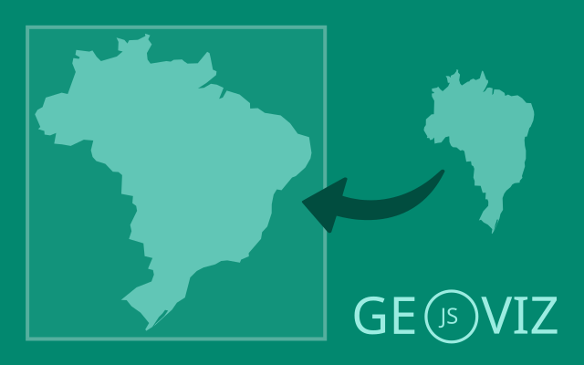
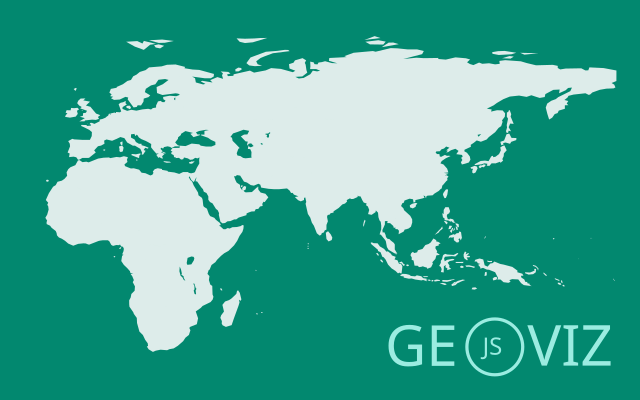
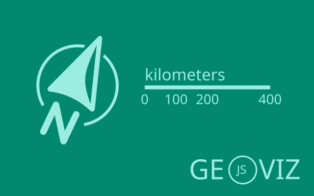
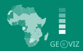
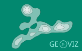
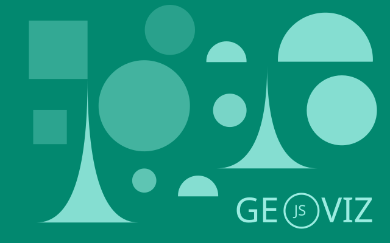
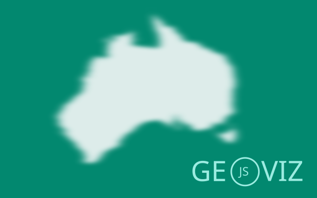
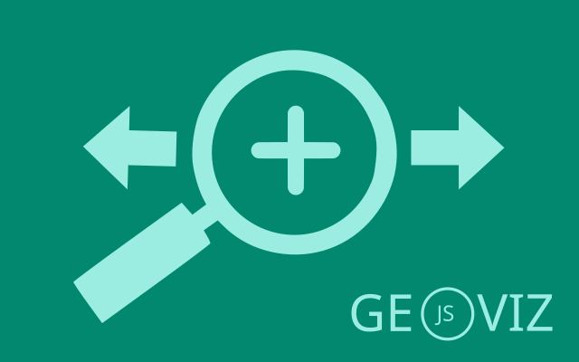
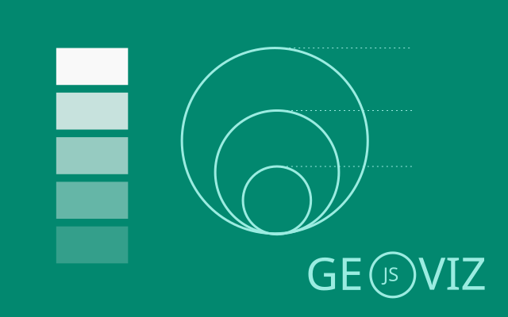
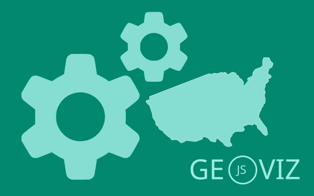

Geoviz JavaScript library

Tags #cartography #maps #geoviz #dataviz #JSspatial #Observable #FrontEndCartography
geoviz is a JavaScript library for designing thematic maps. The library provides a set of d3 compatible functions that you can mix with the usual d3 syntax. The library is designed to be intuitive and concise. It allow to manage different geographic layers (points, lines, polygons) and marks (circles, labels, scale bar, title, north arrow, etc.) to design pretty maps. Its use is particularly well suited to Observable notebooks. Maps deigned with geoviz are:


💻 Source code github
💡 Suggestions/bugs issues

Installation
In the browser (CDN, global variable)
<script src="https://cdn.jsdelivr.net/npm/geoviz" charset="utf-8"></script>
In the browser (ES modules)
<script type="module">
import * as geoviz from "https://cdn.jsdelivr.net/npm/geoviz/+esm";
</script>
With a bundler (Vite, Webpack, etc.)
npm install geoviz
In Observable notebooks
geoviz = require("geoviz")
Examples
There are many examples of maps created with geoviz.

Find here some of them:
Vanilla JS: A simple map, A globe, Proportionnal symbols, Choropleth, Typology, Dorling cartogram, Mercator tiles, Interactive map. (code source available here)
Observable notebooks: Dorling cartogram, Ridge lines, Mapping gw4 population grid, Electricity map, Hand-drawn map, International migrations, Night and day, Mushroom map, Loxodromy vs orthodromy, etc. See All notebooks here
In the newspaper L'Humanité: "Le regard du cartographe" (in french)
Syntax
There are several steps involved in creating a map with geoviz.
1 - First, create the map container using the create() function. This is where you define the projection, margins, background color, etc. In short, all the general parameters of the map.
2 The next step is to progressively add layers. A set of dedicated functions is available for this purpose. For instance, path adds a spatial dataframe, graticule draws latitude and longitude lines, header inserts a title, and footer adds a source note.
3 - Then, the render() function displays the map
For example:
let svg = geoviz.create({projection: "Bertin1953", zoomable: true})
svg.outline()
svg.graticule()
svg.path({data: **a geoJSON**})
svg.header({text : "Hello geoviz"})
svg.render()
Here's an example that works in vanilla JS. Copy this code into an .html file and open it in your web browser.
<script type="module">
import * as geoviz from "https://cdn.jsdelivr.net/npm/geoviz/+esm";
let geojson =
"https://raw.githubusercontent.com/riatelab/geoviz/refs/heads/main/examples/world.json";
fetch(geojson)
.then((res) => res.json())
.then((data) => {
let svg = geoviz.create({ projection: "Bertin1953", zoomable: true });
svg.outline();
svg.graticule();
svg.path({ data: data });
svg.header({ text: "Hello geoviz" });
document.body.appendChild(svg.render());
});
</script>
There are several ways to build maps with geoviz. Multiple syntaxes are possible.
Classic style
let svg = geoviz.create({projection: "Polar"})
geoviz.outline(svg, {fill: "#5abbe8"})
geoviz.graticule(svg, {stroke: "white", step: 30})
geoviz.path(svg, {data: **a geoJSON**, fill: "#38896F"})
geoviz.render(svg)
Light style
let svg = geoviz.create({projection: "Polar"})
svg.outline({fill: "#5abbe8"})
svg.graticule({stroke: "white", step: 30})
svg.path({data: **a geoJSON**, fill: "#38896F"})
svg.render()
With the plot() function
let svg = geoviz.create({projection: "Polar"})
svg.plot({type: "outline", fill: "#5abbe8"})
svg.plot({type: "graticule", stroke: "white", step: 30})
svg.plot({type:"path", data: **a geoJSON**, fill: "#38896F"})
svg.render()
With the draw() function
geoviz.draw({
params: { projection: "Polar" },
layers: [
{ type: "outline", fill: "#5abbe8" },
{ type: "graticule", stroke: "white", step: 30 },
{ type: "path", data: **a geoJSON**, fill: "#38896F" }
]
});
Use whichever one you prefer.
Create & render

These functions are essential for initializing a map, visualizing its content, and exporting it. They form the core workflow for creating maps with the geoviz library.
create(): Create a geoviz map containerrender(): Render the mapexportPNG(): Returns the map as a PNG fileexportSVG(): Returns the map as an SVG file
Observable notebooks: Hello geoviz, Map containers, Export, Draw
Base Map and Structure

Functions that define the map’s geographic content, including outlines, tiles, and graticules.
path(): Add a GeoJSON layeroutline(): Earth outline in the projectiongraticule(): Graticule (latitude and longitude lines)tissot(): Tissot indicatricesearth(): Natural Earth basemaptile(): Mercator tiles
Vanilla JS: Tiles
Map Decorations

Functions for styling and annotating the map, such as titles, scale bars, and north arrows.
header(): Map titlefooter(): Map sourcenorth(): North arrowscalebar(): Scale bartext(): Texts and labelsminimap(): Location mapempty(): Empty layer with idpattern(): Pattern layersketch(): Sketch layerrhumbs(): Rhumb lines (loxodromes)
Observable notebooks: Layout, Insets, Sketch, Pattern, Labels
Thematic

These functions allow the creation of thematic maps based on statistical data, complete with their associated legends.
prop(): Proportional symbols layerchoro(): Choropleth layertypo(): Typology layerpropchoro(): Combined proportional + choropleth layerproptypo(): Combined proportional + typology layerpicto(): Pictogram layer
Observable notebooks: Proportionnal symbols, Choropleth, Typology, Pictograms
Vanilla JS: Proportionnal symbols, Choropleth, Typology
Thematic (advanced)

These functions allow the creation of advanced thematic maps based on statistical data, complete with their associated legends.
gridprop(): Grid-based proportional symbols layergridchoro(): Grid-based choropleth layersmooth(): Smoothed density (isobands) layerdotdensity(): Dot density layer sity)
Observable notebooks: Smooth, Grid, Dot density
Marks

Behind the symbolization functions, there are elementary graphical marks. In geoviz, it is possible to use them directly.
circle(): Circle layersquare(): Square layerspike(): Spike layerhalfcircle(): Half-circle layersymbol(): Symbol layercontour(): Contour layer
Observable notebooks: Circles, Squares, Half circles, Spikes, Texts, Symbols
Effects

Since the maps created are in SVG format, it is possible to apply filters to them. These functions offer four different options for doing so.
effect.shadow(): Shadow effecteffect.blur(): Blur effecteffect.clipPath(): ClipPath layereffect.radialGradient(): Radial gradient
Observable notebooks: SVG filters and clip
Interactivity

Maps created with geoviz are interactive
The maps are zoomable (two zoom modes are available). Custom tooltips can be displayed on hover over individual features. Even geometry simplification can dynamically adapt depending on the zoom level.
Observable notebooks: Tooltip, Pan and zoom, Interactivity, Mercator tiles, Dynamic simplification
Vanilla JS: An interactive map.
Legends

Functions to design map legends.
legend.box(): Add a box legendlegend.typo_vertical(): Vertical typology legendlegend.typo_horizontal(): Horizontal typology legendlegend.choro_horizontal(): Horizontal choropleth legendlegend.choro_vertical(): Vertical choropleth legendlegend.gradient_vertical(): Vertical gradient legendlegend.spikes(): Spike legendlegend.circles(): Proportional circles legendlegend.circles_nested(): Nested proportional circles legendlegend.squares(): Proportional squares legendlegend.squares_nested(): Nested proportional squares legendlegend.mushrooms(): Proportional half-circles (mushrooms) legendlegend.symbol_vertical(): Vertical symbol legendlegend.symbol_horizontal(): Horizontal symbol legend
Observable notebooks: Legends
Tools

Geoviz also provides many useful functions for thematic cartography.
Quick view.
view(): allows you to quickly display one or more layers with an OpenStreetMap background.
Join data with the basemap.
tool.merge(): Joins a GeoJSON with an external dataset (returns a GeoJSON FeatureCollection and a diagnostic)
Clean and handle GeoJSONs.
tool.featurecollection(): Builds a valid GeoJSON FeatureCollection from geometries, features, or coordinatestool.geotable(): Converts a GeoJSON FeatureCollection into an array of objectstool.cleangeometry(): Simplify GeoJSON with optional validity and rewindtool.rewind(): Rewind a GeoJSON FeatureCollection. A homemade approach that tries to work in most cases.
Operations on geometries
tool.centroid(): Computes centroids of geometries in a FeatureCollectiontool.dissolve(): Converts multipart geometries into single-part featurestool.ridge(): Converts gridded (x, y, z) data into LineString features for ridgeline mapstool.grid(): Generates a regular grid as a GeoJSON objecttool.dodge(): Uses force simulation to spatially separate points (e.g., Dorling cartograms)tool.dotstogrid(): Builds a grid and counts points per cell (dot-density preparation)tool.randompoints(): Generates random points inside polygons (dot-density method)tool.replicate(): Creates dot cartograms with overlapping features
Projections
tool.project(): Projects GeoJSON using d3-geo-projectiontool.unproject(): Unprojects geometries to WGS84 (returns a GeoJSON FeatureCollection)tool.proj4d3(): Enables use of proj4 projections with d3 (Philippe Rivière)
Styling
tool.addonts(): Adds fonts to the document from a URLtool.random(): Returns a random color from a predefined palette (20 colors)
Cartographic helpers
tool.choro(): Classifies numeric arrays into choropleth breaks and colorstool.typo(): Assigns colors to categorical data for typology mapstool.radius(): Returns a function to compute circle radii from datatool.height(): Returns a function to compute height scaling (similar to radius scaling)
Map update
attr(): Modify one or multiple layers in one or more SVG maps with a D3 transition.
Observable notebooks: Map projections, Handle geometries
Related libraries
geotoolbox: This library provides several useful GIS operations for thematic cartography. Under the hood,geotoolboxis largely based ongeos-wasmGIS operators (a big thanks to Christoph Pahmeyer 🙏), but also ond3.geoandtopojson.geogrid: This library that allows you to create regular grids with various patterns on a flat plane or on the globe. In addition, it provides geoprocessing functions to transfer GeoJSON data (points, lines, or polygons) onto these grids.geoviz (R version): Geoviz is also available in R language